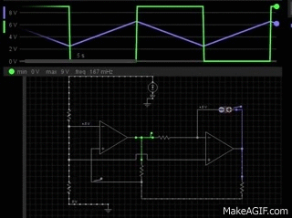

Designing a circuit with a DC supply that alternately illuminates two LEDs can be broken into two parts: the production of an alternating waveform and a complementary transitor control circuit. The triangle wave generator is implemented using a 9 V DC supply and two operational amplifiers, and six BJTs are configured to drive and source current based on the output of the wave generator. The frequency of the LEDs is dependent on several factors but can be modeled using the time constant of an RC circuit within the generator configuration. The triangle wave is then fed into two complementary BJT circuits which consist of a driver and a source. The current sources limit the maximum current through the load and decouple current amplification from the individual \(\beta\) values of the transistors, the most important of which is the driver. This limit can be adjusted to meet the requirements of different loads by increasing or decreasing the value a resistor connected to the current source.
An op amp comparator is coupled with an op amp integrator to produce a triangle wave. The output of the comparator oscillates between the supply voltage and ground which determines whether the capacitor of the integrator is charging or discharging. The output of the integrator increases and decreases linearly which produces a triangle wave. This alternating signal is then fed into two complementary BJT circuits which causes the LEDs to smoothly transition between on and off.
Figure 1: Circuit Schematic
The first stage in the design of this circuit is the triangle wave generator. To implement this oscillator, two op amps are used--a comparator and integrator combo.
We'll begin our analysis with the op amp on the left in Figure 1. That op amp is configured as a comparator. The comparator provides a step change at its output every time the voltage at the noninverting terminal crosses a reference voltage set at the inverting terminal. In this case, the reference voltage is 4.5 V which occurs in the voltage divider with the 4.7 kΩ resistors. Now would probably be a good time to mention that the positive supply voltage is 9 V, and the negative supply terminal is grounded. Because the voltage gain of your typical op amp usually exceeds 100,000, the inputs will have to be equal to within a fraction of a millivolt in order for the output to not be saturated. When the voltage at the noninverting terminal is greater than 4.5 V, the output is a steady 9 V. When the voltage at the noninverting terminal drops below the reference voltage, the input goes negative, and the output is driven to ground.
Now let's talk about the integrator. The voltage at the noninverting input is 4.5 V because it's directly connected to the voltage divider. Consequently, the voltage at the inverting terminal will also be 4.5 V. Since we know the voltage at the output of the comparator, the current flowing into/out of the capacitor can be calculated.
So when the capacitor is charging, the voltage across the capacitor builds and drives the output of the integrator down. Once the voltage at the noninverting terminal of the comparator drops below 4.5, the output of the comparator goes to ground, and the capacitor begins to discharge. As the capacitor discharges, the output voltage of the integrator is driven back up. This process happens again and again, and produces the triangular output waveform which oscillates between 2.5-6.5 V shown in Figure 2.
Figure 2: The output waveforms.
The frequency of oscillation of this circuit is controlled by both the size of the resistor situated between the output of the comparator and the inverting terminal of the integrator and the size of the capacitor. The resistor controls the magnitude of the capacitor current. If a smaller resistor is used, the capacitor will charge more quickly, and the frequency of oscillation will increase and vice versa. Additionally, for a given capacitor current, the larger the capacitor, the larger the time constant and charging/discharging period will be. So if we want the LEDs to alternate more quickly, we could either use a smaller capacitor or a smaller resistor or both.
Figure 3: Green light section of the circuit. The two transistors on the top serve as a current source. The transistor on the bottom drives the current source.
Vs above represents the output of the triangle wave generator. The triangle wave is the input signal for this section of the circuit. A portion of the signal is fed into the base terminal of the NPN transistor(Q3). The input is simplified by finding the Thevenin equivalent circuit between the base terminal and ground. Once we have found the Thevenin equivalent circuit at the base, we can assume that the voltage across the forward biased PN junction in the transistor is approximately 0.7 V. Now the base current can be calculated which leads directly to the collector current. The collector current is also the current through the green LED. Recall that Vs will oscillate between 2.5 and 6.5 V. Figure 3 shows Vs at 4.5 V which produces a base current of approximately 0.071 mA. For the transistors in use here, \(\beta\) varies between 100 and 630 which will drive a collector current of at least 7.1 mA. For now, let us assume that \(\beta\) is 100, but if \(\beta\) were closer to 600, that would drive a collector current of nearly 43 mA which might burn up a little LED. A more detailed explanation of what keeps this from happening is to come. So suffice it to say that when Vs is at its average value of 4.5 V, the green LED will be lit with a current of 7.1 mA flowing through it. This corresponds to the time when both the green and red LEDs are shining with equal intensity.
Now that we've seen how Q3 "drives" the current through the LED, we're ready to talk about the BJT current source configuration formed by Q1 and Q2. Generally speaking, applying a voltage of approximately 0.6 V or greater to the base terminal of a BJT ensures that the emitter will conduct independent of the supply voltage, as long as the transistor is not saturated. The current source formed by Q1 and Q2 in this circuit provides an output current which does not depend on the supply voltage of 9 V. Q1s VEB across the 56Ω resistor sets the output current, independent of VCC. The 10kΩ biases Q2 and holds Q1s collector at two diode drops (1.4 V) below VCC, eliminating Early effect.* Q3 will drive the output current from Q2 which is approximately equal to the base emitter voltage of Q1 divided by 56Ωs. When the green LED is at its brightest, the voltage at the base terminal of Q1 is approximately 8.3 V, and when off, the voltage at the base of Q1 approaches the supply voltage.
Figure 4: Red light section of the circuit. Q4 is the driver, and Q5 and Q6 form a current sink.
The red light circuit works in a similar fashion to the green. However, in this case, the "driver" is a PNP transistor, and two NPN transistors form a current sink. "Sink" and "source" refer to the direction of current flow. If a circuit supplies (+) current to a point, it is a source, and vice versa.
Once again, we'll begin with the "driver", Q4. To simplify things, find the Thevenin equivalent of the base circuit. In this case, things are a little different because the 10kΩ resistor is connected to VCC instead of ground, but the approach is the same. Find RTh and V
Now onto the current sink. The operation of this part of the circuit is a bit more opaque, but like with the current source, we can assume that one of the transistors will be the primary conductor or current sink and that the other transistor's purpose is to bias the sink. When Vs is high, the voltage at the base terminal of Q6 will be approximately one diode drop (0.7 V) above ground, and most of the current from the 9 V supply will be directed through the 10kΩ resistor and into the base of Q6. When Vs is low, Q4 drives current into the collector of Q5, and the current through the 10kΩ resistor becomes very small. Q5 also appears to drive the voltage at the base terminal of Q6 to two diode drops above ground. With this configuration, Q5 and Q6 are always sinking at least a small current, but when Vs goes high, that current is directed around the LED through the 10kΩ resistor.
Another way to look at what's happening with this configuration is to notice that Q5 will limit the voltage across the 56Ω resistor to VBE regardless of what the load or driver is doing. Consequently, the current is limited to \(I_{redLED}=\frac{V_{BE}}{56\Omega}\). This relationship lessens the importance of the \(\beta\) value because no matter where \(\beta\) falls within the range specified by the manufacturer (in this case, the range is 100-650 for both transistor types). So with this configuration, the max current is 12.5 mA which is independent of the magnitude Vs, the supply voltage, or the load. When Q4 drives less than the maximum current (such as in Figure 4 above), Q5 may be in cut-off mode, but as soon as the voltage across that 56Ω resistor rises above the diode cut-in voltage, Q5 begins to conduct and fixes the voltage across the 56Ω resistor at one diode drop above ground. Additionally, since the base of Q5 is connected to the emitter of Q6, Q5 prevents the base voltage of Q6 from rising to more than two diode drops above ground. Essentially this arrangement constitutes a feedback loop in which, at first, Q6 pulls up the base voltage of Q5 which then anchors the base voltage of Q6.
To increase the frequency of the wave generator, we can either make the resistor smaller or the capacitor smaller or a combination of both. For an RC circuit, the time constant, \(\tau\), is equal to the magnitude of the resistor mulitplied by the capacitance. So if I wanted to make the lights alternate about 3 times faster, I could just use a 1MΩ resistor instead of a 3.3MΩ resistor. See the appendix for a video. However, we should keep in mind that the op-amps and reference voltage also control the capacitor current and consequently the frequency. Using \(tau\) as the primary means of analysis is just a simplified approach.
Next, consider how many parallel LEDs this circuit drive. If no changes are made, it looks like the maximum number of parallel LEDs per source/sink is two. The maximum current supply is around 12.5 mA, and if that current is split more than two ways, the LEDs won't illuminate at all. So the maximum total number of parallel LEDs that this circuit can drive is four. So how can the circuit be modified to drive more than two or so LEDs?
The magnitude of VCC doesn't affect the magnitude of the current flowing through the LEDs at all. That's just part of the source/sink design. It seems like the easiest way to be able to drive 3 LEDs is to remove the 56Ω resistor. If you take a look at the equation which was derived for the current source, \( I_{greenLED} \approx \frac{V_{EBofQ1}}{56\Omega} \), the largest the voltage can be is a diode drop, so if more current is needed, the resistance must be reduced. This will also work the same way for the current sink configuration. If the 56Ω resistor is removed, Q5 and Q6 will be able to sink much more current. Keep in mind that this also depends on what kind of LED is being used. The red LED I received in my bundle appears to require less current than the green LED I got.
Now, we'll consider what might need to be changed if, instead of LEDs, the circuit was supplying something like a tungsten bulb. Many things would need to be different, but the takeaway is that the BJTs we've been using are rated for low power applications. Tungsten bulbs typically consume much more power than LEDs, and a transistor current source may not be able to supply the necessary voltage and current. For example, the bulb I pulled out of my desk lamp is rated at 43 watts for use with a 120 V source. This means a current of approximately 360 mA would be required. The transistor datasheet indicates that the absolute maximum collector current is 800 mA, so these transistors might be able to handle the current. However, supplying 120 V might be an issue.